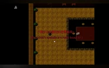

Game: Heta Anthropic Reincarnation (黑塔人类纪行)
Ending Track: しかばねの踊り (Shikabane no Odori)
Previous: 0.APPLE
Next: 2.HEAD
1.WISHES is the second chapter in Heta Anthropic Reincarnation (黑塔人类纪行).
Warning: the following contains spoilers. Click [Expand] on the right to read a section.
England wakes up in the conference room, feeling the apple's sweetness still lingering in his mouth. He thinks everything was a dream. He starts to remember his dream. He remembers that they had a great time for three days in the villa and everyone was happy, but he can't remember anything about those three days, except for the last game proposed by America. After the game in the dream, England was eating an apple while walking out of the forest. He had suddenly lost consciousness, and when he opened his eyes again, he was back in the conference room, and an international conference going on. America declares the meeting to be over, but as they deem it too inconvenient to leave with the fog outside, he proposes that they play a game.
England gets déjà vu as America explains the game's rules — too similar to the one in England's dream. However, England notices that America did not address the wooden sticks with no carving this time. America calls this game "Killer VS Smiler 2.0". The order the countries draw the sticks are different this time: France, Italy, China, Germany, Russia, Japan, England. After England draws his stick, Italy asks if there is any identity corresponding to other carvings (i.e., other than the knife and smile). America tells them they can ignore any other carving, and that it means they are a regular person (i.e., they don't have a role). As there is a wooden stick left over, America takes it, deciding to join the game as he doesn't think a judge is needed. America then disperses everyone, allowing them to walk around the villa.
As England is on his way out the conference room, an unknown voice speaks to him.

England snaps out of the daze after Japan talks to him and gives him a sachet to calm him. England stays in the conference room to rest while Japan exits the room.
Japan, having the Killer's stick, wonders who the Smiler is. He first runs into Russia, who wants to be eliminated from the game early so that he can return home earlier. The fog had thinned enough at this point for Russia to leave safely. Japan eliminates Russia, taking his wooden stick with a key carving. Japan then runs into Italy, who knew Japan's role as he peeked at his stick while they were drawing lots. Italy runs off, prompting Japan to chase him, but Japan does not follow, knowing he can't catch up to Italy. As Japan continues exploring the villa, a gunshot sounds in the direction of the conference room.
Japan, Germany and China rush over to the conference room to find England dead. America and France are already at the scene. America calls Russia in the hopes that Russia had seen the person who did it. Russia denies seeing anyone, and halfway through the conversation, the line is cut on Russia's end. To the confusion of the others, America blurts out that this was the Killer's doing. Germany and Japan make their leave to search for Italy, who didn't come over to the conference room.
The atmosphere is heavy as America, China and France wait in the conference room. France inspects England's body and finds a bullet wound through his head. He feels an unexplained chill while doing so. He then attempts to lock the door but fails, and America claims that none of the locks in the villa are functional. France comes across a world map in the room, noticing that someone drew a cross over the country above the USA. He fails to recall which country it is. While France is exploring the room, America seems to have heard a strange sound, but quickly brushes it off.
Germany and Japan finds Italy in the storeroom and returns to the conference room with him. Germany reveals England's death to Italy after the latter notices something off. Then, America proposes two ways to move forward: to leave immediately or to stay and investigate. He pushes France to decide for them, much to France's confusion. France feels a strange feeling of responsibility, pushing him to make the decision for all of them. He assumes it is coming from his wooden stick. France first decides to leave, but a chill prevents him from speaking, and he changes his mind, finally deciding to stay until the culprit behind England's death is found. No one objects.
They split into two groups afterwards: Germany, Japan and Italy will search the first floor; America, China and France will seal the second floor and the rooms that have been checked.